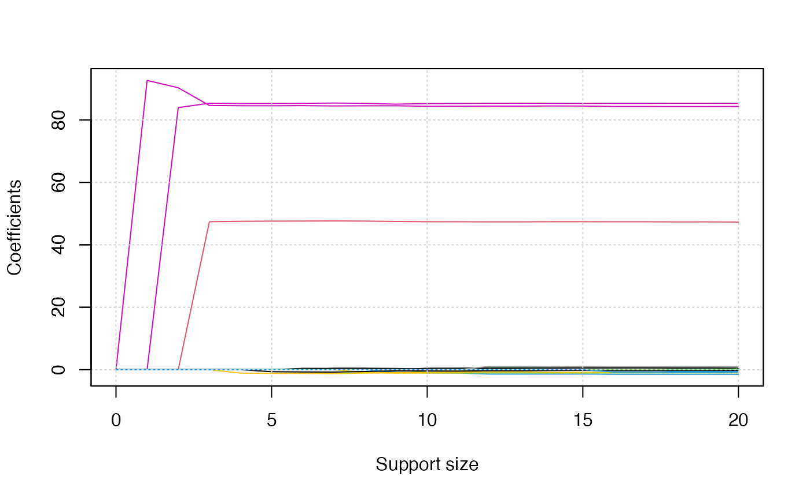
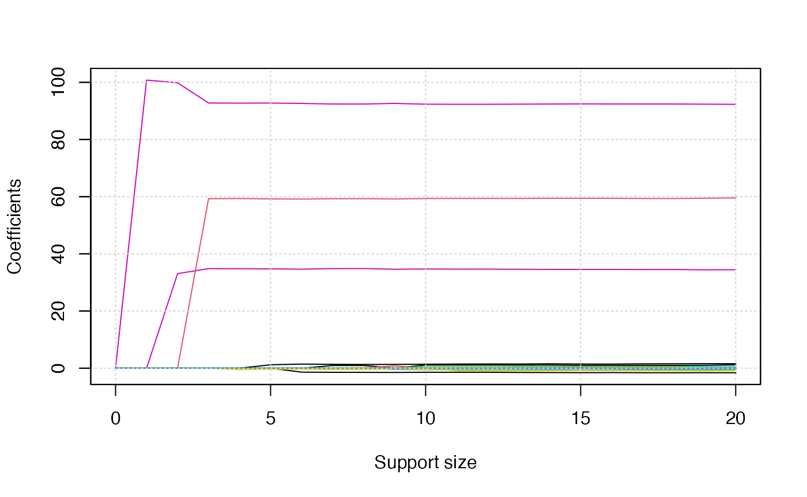
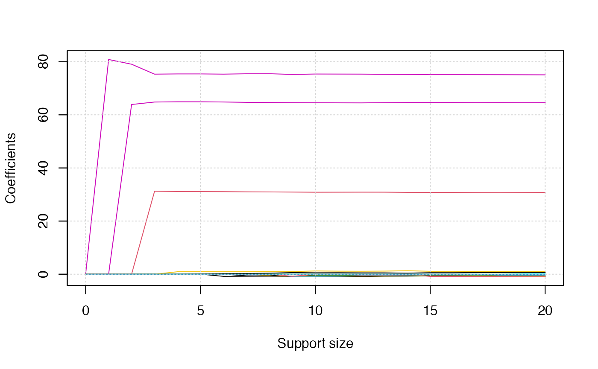

../vignettes/v06-MultiTaskLearning.Rmd
v06-MultiTaskLearning.RmdMultivariate multi-response linear regression (a.k.a., multi-task learning) aims at predicting multiple responses at the same time, and thus, it is a natural extension for classical linear regression where the response is univariate. Multivariate multi-response linear regression (MMLR) is very helpful for the analysis of correlated response such as chemical measurements for soil samples and microRNAs associated with Glioblastoma multiforme cancer. Let \(y\) is \(m\)-dimensional response variable, \(x\) is \(p\)-dimensional predictors, \(B \in R^{m \times p}\) is coefficient matrix, the MMLR model for the multivariate response is given by \[y = B x + \epsilon,\] where \(\epsilon\) is \(m\)-dimensional random noise variable with zero mean.
Due to the Occam’s razor principal or the high-dimensionality of predictors, it is meaningful to use a small amount of predictors to conduct multi-task learning. For example, understanding the relationship between gene expression and symptoms of a disease have significant importance in identifying potential makers. Many diseases usually involve multiple manifestations and those manifestations are usually related. In some cases, it makes sense to predict those manifestations using a small but the same set of predictors. The best subset selection problem under the MMLR model is formulated as \[\frac{1}{2n} \| Y - XB \|_{2}^2, \text{ subject to: } \| B \|_{0, 2} \leq s,\] where, \(Y \in R^{n \times m}\) and \(X \in R^{n \times p}\) record \(n\) observations’ response and predictors, respectively. Here \(\| B \|_{0, 2} = \sum_{i = 1}^{p} I(B_{i\cdot} = {\bf 0})\), where \(B_{i\cdot}\) is the \(i\)-th row of coefficient matrix \(B\) and \({\bf 0} \in R^{m}\) is an all zero vector.
We use an artificial dataset to demonstrate how to solve best subset selection problem for MMLR with abess package. The generate.data() function provides a simple way to generate suitable for this task. The synthetic data have 100 observations with 3-dimensional responses and 20-dimensional predictors. Note that there are three predictors have an impact on the responses.
library(abess)
n <- 100
p <- 20
support.size <- 3
dataset <- generate.data(n, p, support.size, family = "mgaussian")
head(dataset$y)## y1 y2 y3
## [1,] 104.3057832 113.312533 74.75589
## [2,] 58.6265922 -7.224093 40.39639
## [3,] -294.1884567 -288.633432 -227.19660
## [4,] -0.5421699 85.740440 -12.95485
## [5,] 160.4051274 92.082972 138.51176
## [6,] 132.9713249 132.500001 119.50803
dataset[["beta"]]## [,1] [,2] [,3]
## [1,] 0.00000 0.00000 0.00000
## [2,] 0.00000 0.00000 0.00000
## [3,] 0.00000 0.00000 0.00000
## [4,] 0.00000 0.00000 0.00000
## [5,] 0.00000 0.00000 0.00000
## [6,] 84.67713 92.93448 75.47809
## [7,] 0.00000 0.00000 0.00000
## [8,] 0.00000 0.00000 0.00000
## [9,] 0.00000 0.00000 0.00000
## [10,] 0.00000 0.00000 0.00000
## [11,] 0.00000 0.00000 0.00000
## [12,] 0.00000 0.00000 0.00000
## [13,] 0.00000 0.00000 0.00000
## [14,] 85.82187 34.34362 64.39117
## [15,] 0.00000 0.00000 0.00000
## [16,] 0.00000 0.00000 0.00000
## [17,] 0.00000 0.00000 0.00000
## [18,] 47.40922 59.10738 31.21572
## [19,] 0.00000 0.00000 0.00000
## [20,] 0.00000 0.00000 0.00000To carry out sparse mutli-task learning, you can call the abess() function with family specified to mguassian. Here is an example.
abess_fit <- abess(dataset[["x"]], dataset[["y"]],
family = "mgaussian", tune.type = "cv")
extract(abess_fit)## $beta
## 20 x 3 sparse Matrix of class "dgCMatrix"
## y1 y2 y3
## x1 . . .
## x2 . . .
## x3 . . .
## x4 . . .
## x5 . . .
## x6 84.62951 92.75669 75.32181
## x7 . . .
## x8 . . .
## x9 . . .
## x10 . . .
## x11 . . .
## x12 . . .
## x13 . . .
## x14 85.34962 34.83632 64.82193
## x15 . . .
## x16 . . .
## x17 . . .
## x18 47.37992 59.28869 31.23534
## x19 . . .
## x20 . . .
##
## $intercept
## y1 y2 y3
## -0.75263061 0.12788731 -0.07370499
##
## $support.size
## [1] 3
##
## $support.vars
## [1] "x6" "x14" "x18"
##
## $support.beta
## y1 y2 y3
## x6 84.62951 92.75669 75.32181
## x14 85.34962 34.83632 64.82193
## x18 47.37992 59.28869 31.23534
##
## $dev
## [1] 112.0141
##
## $tune.value
## [1] 117.1686The output of extract(abess_fit) shows that the support set is correctly identify and the parameter estimation approach to the truth.
Since there are three responses, we will obtain three solution path plots when calling the plot() function. The three plots corresponds to \(y_1, y_2, y_3\), respectively.
plot(abess_fit)